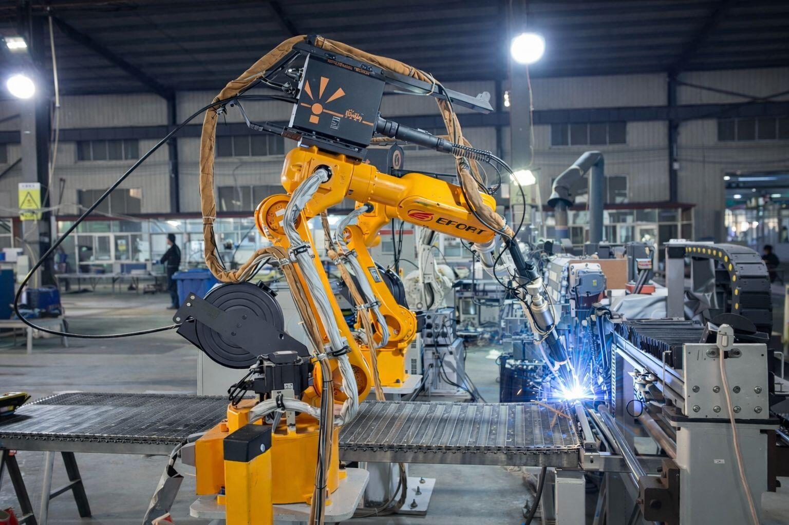

Who Buyers Work With at YIYI Mesh Belt
YIYI Mesh Belt is not positioned as a generic trading company or a catalog-only supplier. Buyers work with a factory-based team that connects manufacturing execution, engineering review, quality control, and export coordination into one practical industrial supply relationship.
- 27,000 sqm integrated facility in Ningjin, Shandong
- 280+ production machines and 30+ patents on file
- OEM, distributor, and replacement supply logic in one system
See YIYI Mesh Belt Before You Start the Next Conversation
Watch a full company introduction covering our manufacturing base, product scope, export orientation, and the kind of factory support industrial buyers can expect when working with YIYI Mesh Belt.

Factory, Product, and Export Overview in One Place
This video works best for first-time buyers, distributor qualification, and OEM teams that want a quick visual understanding of who YIYI is before moving into quotations, drawings, or supplier review.
- Factory-based manufacturing and workshop visibility
- Product categories and industrial application context
- Export readiness and practical buyer-facing support

Supplier Confidence Starts With Real Factory Visibility
This proof area is prepared for the full factory building or aerial photo. Before the final exterior image is supplied by the team, it uses verified workshop evidence to support factory-based trust without exposing customer privacy.
- Use factory exterior, workshop panorama, or aerial building photo
- Do not show customer logos, delivery labels, order numbers, or private screens
- Best for buyer qualification, distributor review, and factory visit planning
Aries Zhang: A Factory Story Built From Machining Experience
I came into this industry from mechanical processing, not from a catalog sales background. That experience shaped how I built YIYI Mesh Belt: material, fit, production discipline, and long-term responsibility have to come before simple selling.
From Machining Logic to Metal Conveyor Belt Manufacturing
I studied and worked with mechanical processing before building YIYI Mesh Belt. That background matters because metal conveyor belts are not only purchased by name or photo. They must match pitch, edge structure, sprockets, load, temperature, and the actual equipment path.
When I started the company, my purpose was not to create a trading office. I wanted to build a factory that could control key production steps, understand technical details, and support customers when a replacement belt or OEM project needed more than a simple price quote.
Today, this thinking is still visible in how we communicate with buyers: we confirm the drawing, check the old belt or application photos, control material and process steps, inspect before shipment, and keep enough production memory for repeat orders. For distributors, OEM builders, and maintenance teams, I believe a supplier should think like a manufacturing partner, not just a seller.
Visible Manufacturing Capability Behind the Company Name
For overseas buyers, a supplier introduction should show more than a logo. These factory proof points help confirm that YIYI Mesh Belt controls the practical stages behind repeatable metal conveyor belt supply.
Factory-Based Supply
Production visibility supports supplier qualification, distributor confidence, and long-term replacement supply planning.

Consistent Weld Control
Automated welding helps reduce manual variation in high-volume production and supports repeatable belt geometry.

Raw Material Control
In-house wire preparation and regular core wire stock help improve material response speed and production stability.

Inspection Before Dispatch
Process checks, dimensional confirmation, and final QA reduce mismatch risk before packing and export delivery.
Choose the Fastest Next Conversation
Different buyers come to an about page for different reasons. Some want supplier confidence. Some want factory visibility. Some want to move immediately into engineering or quoting.
I Need Supplier Confidence Before Quoting
- Best for procurement teams and distributors comparing suppliers
- Use when company strength and manufacturing discipline matter first
- Ask For A Quick Quote
I Need Factory Verification or Audit Support
- Best for vendor review, qualification, and plant-visit planning
- Use when visibility and verification matter before placing repeat orders
- Book a Factory Visit
I Need Engineering and Manufacturing Alignment
- Best for OEM builders, drawings, and system-matching questions
- Use when the next step is technical review, not just company reading
- Get Engineering Support
How YIYI Mesh Belt Thinks About Industrial Supply
This business is not built around a one-time shipment mindset. It is built around whether a belt can be specified correctly, produced consistently, shipped clearly, and repeated without drift in the next order cycle.
Manufacturing Is Part of the Sales Promise
At YIYI Mesh Belt, manufacturing control is not separated from commercial communication. A quotation only becomes meaningful when it is backed by a process that can actually produce to the confirmed benchmark.
Drawings, Samples, and Fit Matter Before Price
OEM supply and replacement support depend on understanding system fit, matched parts, and application conditions. That is why engineering review is treated as part of real cooperation, not an optional extra.
Delivery Is Part of Reliability
Industrial buyers do not only need a belt made correctly. They also need coordinated documents, export handling, and shipment clarity so the product arrives ready for installation and repeat ordering.
Company Strength Becomes Valuable Only When It Reduces Risk
Industrial buyers usually do not choose a supplier because the supplier says it is experienced. They choose because the supplier reduces project uncertainty at the points where mistakes are expensive.
Repeatability Across Project Cycles
A factory-based team with retained specifications, sample logic, and matched-component review is easier to work with when projects move from prototype to repeat production.
Commercial Support Backed by Real Execution
Distributor support matters more when it is tied to actual lead times, export capability, and production control rather than generic product claims.
Faster Answers from Imperfect Inputs
When the original drawing is missing, a stronger supplier is the one that can work from photos, old samples, and system clues without turning the replacement request into guesswork.
Where to Go Next
This page should build confidence, but it should also move you into the right next step for your project.
Manufacturing Assurance
See how process control, repeatability, and export execution are presented to industrial buyers.
Engineering & OEM
Move from company confidence into drawing review, matched parts, and project coordination.
Case Studies
See how real OEM and replacement projects were supplied, confirmed, and repeated.
Need More Than a Company Introduction?
Tell us whether you need supplier qualification, factory visibility, engineering review, or a live commercial quotation. We will move you to the right next step instead of leaving you at the brochure stage.